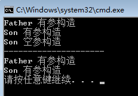

代码块 代码块概述 在Java中，使用{ }括起来的代码被称为代码块。
代码块的分类 根据其位置和声明的不同，可以分为局部代码块、构造代码块、静态代码块、同步代码块 。
局部代码块。在方法中出现；限定变量生命周期，及早释放，提高内存利用率。
构造代码块（初始化块）。在类中方法外 出现；多个构造方法中相同的代码放到一起，每次调用构造都执行，并且在构造方法前执行。
静态代码块。在类方法外 出现，并加上static 修饰；用于给类进行初始化，在加载的时候就执行，并且只执行一次。
class Student private String name; private int age; public Student () System.out.println("空参构造" ); } public Student (String name, int age) this .name = name; this .age = age; System.out.println("有参构造" ); } { study(); } public void study () System.out.println("学生学习" ); } static { System.out.println("静态代码块" ); } }
继承 class Animal String color; int leg; public void eat () System.out.println("吃饭" ); } public void sleep () System.out.println("睡觉" ); } } class Car extends Animal } class Dog extends Animal }
继承的好处
提高了代码的复用性。
提高了代码的维护性。
让类与类之间产生了关系，是多态的前提。
继承的弊端 增强了类的耦合性。
开发的原则：高内聚，低耦合。
耦合：类与类的关系。
内聚：就是自己完成某件事情的能力。
Java中继承的特点
Java只支持单继承，不支持多继承。
Java支持多层继承（继承体系）。
class DemoA public void show () System.out.println("DemoA" ); } } class DemoB extends DemoA public void method () System.out.println("DemoB" ); } } class DemoC extends DemoB public void print () System.out.println("DemoC" ); } }
注意 ：
如果想用这个体系的所有功能，用最底层 的类创建对象。
如果想看这个体系的共性功能，看最顶层 的类。
继承的注意事项
子类只能继承父类所有非私有的成员 （成员方法和成员变量）。
子类不能继承父类的构造方法，但是可以通过super关键字 去访问父类构造方法。
不要为了部分功能而去继承。
继承中成员变量的关系 子父类出现同名的变量时，用就近原则。
class Father int num1 = 10 ; int num2 = 30 ; } class Son extends Father int num2 = 20 ; public void print () System.out.println(num1); System.out.println(num2); } }
注意 ：子父类出现同名的变量在开发中不会出现，因为子类继承父类就是为了使用父类的成员，所以定义同名的成员变量没有意义。
this和super关键字 this：代表当前对象的引用，哪个对象调用，就代表哪个对象。
super：代表当前对象父类的引用。
调用成员变量 this.成员变量，可以调用本类的成员变量，也可以调用父类的成员变量。
super.成员变量，可以调用父类的成员变量。
class Father int num1 = 10 ; int num2 = 30 ; } class Son extends Father int num2 = 20 ; public void print () System.out.println(this .num1); System.out.println(this .num2); System.out.println(super .num2); } }
继承中构造方法的关系 子类中所有的构造方法默认都会访问父类中空参的构造方法。
其实，每一个构造方法的第一条语句默认都是super()，它访问父类的空参构造方法。Object类是最顶层的父类。
class Father extends Object public Father { super (); System.out.println("Father 的构造方法" ); } } class Son extends Father public Son { super (); System.out.println("Son 的构造方法" ); } }
如果父类没有无参构造方法。子类可以通过super和this解决。注意super(…)或者super(…)必须出现在构造方法的第一条语句上。
class Demo6_Extends public static void main (String[] args) Son s1 = new Son(); System.out.println("---------------------" ); Son s2 = new Son("张三" , 24 ); } } class Father private String name; private int age; public Father (String name, int age) this .name = name; this .age = age; System.out.println("Father 有参构造" ); } } class Son extends Father public Son () this ("王五" , 25 ); System.out.println("Son 空参构造" ); } public Son (String name, int age) super (name, age); System.out.println("Son 有参构造" ); } }
运行结果

方法的重写 重写：子父类出现一模一样的方法时，子类方法重写父类方法。
方法重写的应用 当子类需要父类的功能，而功能主体子类有自己特有内容时，可以重写父类中的方法。
class Demo7_Phone public static void main (String[] args) Ios8 i = new Ios8(); i.siri(); i.call(); } } class Ios7 public void call () System.out.println("打电话" ); } public void siri () System.out.println("Speak English" ); } } class Ios8 extends Ios7 public void siri () System.out.println("说中文" ); } }
注意 ：
父类中私有方法不能被重写。因为父类私有方法子类无法继承。
子类重写父类方法时，访问权限不能更低（最好就一致）。
父类静态方法，子类也必须通过静态方法进行重写（多态）。
子类对象调用方法的时候，先找子类本身，再找父类。
重写和重载 方法重写override ：子类中出现了和父类中方法声明一模一样的方法。与返回值类型有关，返回值是一致的。
方法重载overload ：本类中出现的方法名一样，但参数列表不同的方法。与返回值类型无关。
final关键字 final概述 final是最终的。
final修饰特点
修饰类。类不能被继承 ，如String类。
修饰变量。变量变成了常量，只能被赋值一次 。
修饰方法。方法不能被重写 。
class FinalDemo final int NUM = 10 ; public static final double PI = 3.14 ; public void print () System.out.println(NUN); } }
注意 ：final修饰变量叫做常量 ，一般会和public static一起使用。
方法内部使用final 基本类型：值不能被改变。
引用类型：地址值不能被改变，对象中的属性可以改变。
class Demo2_Final public static void main (String[] args) final int num = 10 ; System.out.println(num); final Person p = new Person("张三" , 23 ); p.setName("李四" ); p.setAge(24 ); } }
final修饰变量的初始化时机 有两种方式，但不能一起使用。
显式初始化 虽然成员变量的默认初始化值为0，但是是无效的值。
class Demo final int num = 10 ; public void print () System.out.println(num); } }
在对象构造完毕前 class Demo final int num; public Demo () num = 10 ; } public void print () System.out.println(num); } }